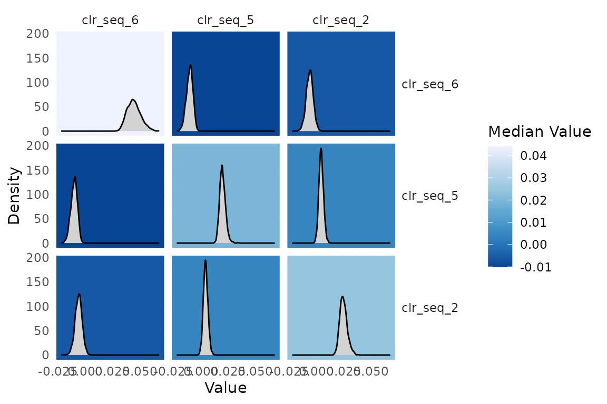
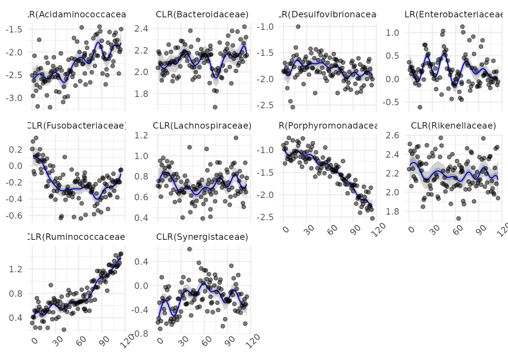

Non-linear models with fido::basset
Justin Silverman
Source:vignettes/non-linear-models.Rmd
non-linear-models.RmdIf you have not already done so, I would read through the pibble vignette before this one.
fido::basset, the model
fido can be used for non-linear modeling. Here we are going to go through one such model which is based on multivariate Gaussian processes. As Gaussian processes are a type of lazy learner, I have named this model after a lazy dog: a Basset Hound. Hence this model is called basset. The basset model can be written as where we now label quantities interpreted as function with square brackets. In particular, we use the notation that is a function that maps am matrix of covariates to a matrix . can be interpreted as a smooth function that relates covariates to composition in a potentially non-linear manner. is the mean function evaluated at , is a covariance matrix (or gram matrix) formed by evaluating a positive semi-definite kernel function at each set of points and , i.e., . Many different possible kernel functions makes this a very flexible and powerful model.
Non-linear time-series modeling
To demonstrate basset I am going to reanalyze the mallard1 dataset from Silverman et al. (2018) which is provided as a phyloseq object in fido. This dataset features 4 artificial gut vessels sampled both daily and hourly for 1 month with many technical replicates.
To accord with prior analyses (and to make it easy to visualize
results) I am going to just analyze those bacterial families that are
frequently observed. Note: the full dataset (at the sequence variant
level without preprocessing) is available if you run
data(mallard). For simplicity we will just look at samples
from vessel 12.
library(fido)
library(dplyr)
library(tidyr)
library(ggplot2)
data(mallard_family)
# Just take vessel 1
sample.ids <- mallard_family$sample_data[mallard_family$sample_data$Vessel == 1,]
# Just take hourly samples
sample.ids <- sample.ids[(sample.ids$time > "2015-11-20 15:00:00 UTC") & (sample.ids$time < "2015-11-25 16:00:00 UTC"),]
# Subsetting the sample data and OTU data
subset.sample_data <- mallard_family$sample_data[mallard_family$sample_data$X.SampleID %in% sample.ids$X.SampleID,]
subset.otu_table <- mallard_family$otu_table[rownames(mallard_family$otu_table) %in% sample.ids$X.SampleID,]
# Order samples - to make plotting easy later
o <- order(subset.sample_data$time)
subset.otu_table <- subset.otu_table[o,]
subset.sample_data <- subset.sample_data[o,]
# Extract Data / dimensions from Phyloseq object
Y <- t(as(subset.otu_table, "matrix"))
D <- nrow(Y)
N <- nrow(subset.sample_data)
# X in hours
X <- as.numeric(subset.sample_data$time)
X <- t((X-min(X)) / 3600)The function basset is a wrapper around some fido
internals that make fitting the above model easy. basset is
patterned after the function pibble but requires that
Theta and Gamma be given as matrix functions
rather than as matrices. That is Theta must be a function
that given X outputs a
matrix (just like you would give to pibble) and
Gamma must be a function that given X outputs
a
covariance matrix (e.g., covariance over the samples). There are a few
kernel functions that meet the requirements for Gamma in
fido already. Here we will use a Squared Exponential (SE)
kernel for Gamma and will set Theta to be the
zero function. The SE kernel will give us non-linear smoothing of the
observed time-series.
Important Note: Currently, Theta must output a
matrix represented in the default coordinate system
().
This may be generalized in the future.
Here we will just specify the Kernel parameters manually, more generally these parameters can be chosen by cross-validation.
# Specify Priors
Gamma <- function(X) SE(X, sigma=5, rho=10) # Create partial function
Theta <- function(X) matrix(0, D-1, ncol(X))
upsilon <- D-1+3
Xi <- matrix(.4, D-1, D-1)
diag(Xi) <- 1
# Now fit the model
fit <- fido::basset(Y, X, upsilon, Theta, Gamma, Xi)
#> No rows of X were specified. Using all rows...It turns out that basset is really just creating a pibblefit object that is a little special because it represents a posterior over non-linear functions. The benefit of this is that many of the methods available for pibblefit objects work for bassetfit objects. For example, we can use the same transformation methods:
fit.clr <- to_clr(fit)
# Plot Sigma in CLR
plot(fit.clr, par="Sigma", focus.coord=c("clr_seq_6", "clr_seq_5", "clr_seq_2"))
Really basset shows its power when you use it to smooth.
# predict not just missing days but also forecast into future
X_predict <- t(1:(max(X)))
predicted <- predict(fit.clr, X_predict, jitter=1) Now I am going to create a visual that shows the observed data in CLR coordinates (to do that I will need to add a pseudo-count) along with the smoothed estimates.
family_names <- as(mallard_family$tax_table$Family, "vector")
Y_clr_tidy <- clr_array(Y+0.65, parts = 1) %>%
gather_array(mean, coord, sample) %>%
mutate(time = X[1,sample],
coord = paste0("CLR(", family_names[coord],")"))
predicted_tidy <- gather_array(predicted, val, coord, sample, iter) %>%
mutate(time = X_predict[1,sample]) %>%
filter(!is.na(val)) %>%
group_by(time, coord) %>%
summarise_posterior(val, na.rm=TRUE) %>%
ungroup() %>%
mutate(coord = paste0("CLR(", family_names[coord],")"))
ggplot(predicted_tidy, aes(x = time, y=mean)) +
geom_ribbon(aes(ymin=p2.5, ymax=p97.5), fill="darkgrey", alpha=0.5) +
geom_ribbon(aes(ymin=p25, ymax=p75), fill="darkgrey", alpha=0.9)+
geom_line(color="blue") +
geom_point(data = Y_clr_tidy, alpha=0.5) +
facet_wrap(~coord, scales="free_y") +
theme_minimal()+
theme(axis.title.y = element_blank(),
axis.title.x = element_blank(),
axis.text.x = element_text(angle=45))
Updated Functionality: Additive Gaussian Processes
Michelle Nixon
Starting with fido version 1.1.0, the basset model has been updated. The new model is a more flexible extension of the old model as it allows to be modeled as an additive Gaussian process model:
There is a great deal of flexibility in how and can be specified for . To invoke the additive Gaussian process, the inputs Theta and Gamma can now be a list of length with each element of both lists corresponding to the prior specification for a given additive component. The elements of the list can either be functions over the correct dimensions (see documentation) or an (optional) matrix of correct size. If the matrix is used for component , then a linear model is fit for that component, and returns estimated parameters similar to the fido model. If a function is used for component , then that component works similarly to the old basset model in both input and returned results. Note: If the list item for Theta is a function, then the list item for Gamma must also be a function. If the list item for Theta is a matrix, then the list item for Gamma must also be a matrix.
Now, a simple simulation study to show how the updated functionality works. First, we are going to simulate our data. Here, we will simulate three taxa () over 100 observations ().
library(fido)
library(MCMCpack)
library(LaplacesDemon)
set.seed(2024)
D <- 3 # number of taxa
N <- 100 #number of observation
X <- seq(0,10, length.out = N) # specifying the values of XWe are going to simulate our data such that . The first component will be using a radial basis function kernel. The second component will be using a linear kernel.
# RBF kernel function
rbf <- function(x,l,sigma) {
K <- outer(x,x, FUN = function(x,y, sigma,l){sigma^2 * exp(- (x - y)^2 / (2 * l^2))}, sigma = sigma, l = l)
identity_matrix <- diag(ncol(K))
K <- K + 1e-8 * identity_matrix
return(K)
}
# Linear kernel function
linear <- function(x,sigma,c) {
K <- outer(x,x, FUN = function(x,y, sigma,c){ (sigma^2 + (x-c) * (y-c))}, sigma = sigma, c=c)
identity_matrix <- diag(ncol(K))
K <- K + 1e-8 * identity_matrix
return(K)
}First, we will simulate , then and (and thus ). Then, we will simulate , transform to proportions, and, finally, simulate .
## Step 1: Sigma ~ IW(upsilon,Xi)
Sigma <- rinvwishart(D-1, 0.5*diag(D-1))
## Step 2a: Lambda_1 ~ GP(0,Sigma,K)
K <- rbf(X,1,1)
Theta <- matrix(0, D-1, N)
x <- matrix(rnorm(N*(D-1)),nrow = D-1)
l1 <- Theta+ t(chol(Sigma))%*%x%*%(chol(K))
## Step 2b: Lambda_2 ~ GP(0, Sigma, K2)
K2 <- linear(X,.1,0)
Theta <- matrix(0, D-1, N)
x <- matrix(rnorm(N*(D-1)),nrow = D-1)
l2 <- Theta+ t(chol(Sigma))%*%x%*%(chol(K2))
l <- l1 + l2
## Step 3: eta ~ N(Lambda,Sigma, I)
eta <- matrix(rnorm(N*(D-1)),nrow = D-1, byrow = TRUE)
eta <- l + t(chol(Sigma))%*%eta
## Step 4: transform to proportions
pai <- t(alrInv(t(eta)))
## Step 5: Simulate Y.
Y <- matrix(0, D, N)
for (i in 1:N) Y[,i] <- rmultinom(1, 5000, prob = pai[,i])Phew! Now, to analyze the data. First, we want to specify our priors for and . Since we know how the data were simulated, we will use the ground truth as our priors:
rbf <- function(x,l,sigma) {
x <- x[1,]
K <- outer(x,x, FUN = function(x,y, sigma,l){sigma^2 * exp(- (x - y)^2 / (2 * l^2))}, sigma = sigma, l = l)
identity_matrix <- diag(ncol(K))
K <- K + 1e-8 * identity_matrix
return(K)
}
# Linear kernel function for Gaussian process
linear <- function(x,sigma,c) {
x <- x[1,]
K <- outer(x,x, FUN = function(x,y, sigma,c){ (sigma^2 + (x-c) * (y-c))}, sigma = sigma, c=c)
identity_matrix <- diag(ncol(K))
K <- K + 1e-8 * identity_matrix
return(K)
}
Gamma <- list(function(X) rbf(X,1,1), function(X) linear(X,.1,0))Next, we need to specify our prior for and :
And, finally, we can fit the model:
mmX <- model.matrix(~X-1)
mod <- basset(Y, t(mmX), Theta = Theta, Gamma = Gamma)
#> No rows of X were specified. Using all rows...Now, let’s look at the results. You’ll notice that the parameter objects for is now a list. It behaves as you largely would expect: the element of the list for Lambda corresponds to the component as specified by Theta and Gamma.
typeof(mod$Lambda)
#> [1] "list"The model object should largely work as it has before. For example, we can find predictions:
## predictions
preds <- predict(mod)
## summarizing predictions over posterior samples
summary_preds <- apply(preds,MARGIN = c(1,2), FUN = mean)And, finally, we can plot the predictions:
## plotting
data.frame("points" = c(eta[1,], summary_preds[1,]), "group" = c(rep("Truth", length(eta[1,])), rep("Predicted", length(summary_preds[1,]))), "Index" = c(1:N, 1:N)) %>%
ggplot(aes(x=Index, y= points, color = group)) +
geom_line() +
theme_bw() +
scale_color_manual(values = c("red", "black")) +
theme(legend.title=element_blank()) +
ylab("Eta")
Note that since the second component was linear, we could have specified the priors using matrices as well. This might be more helpful if, for example, the estimated individual coefficients for the linear terms are of interest.
Theta <- list(matrix(0, D-1, ncol(mmX)), function(X) matrix(0, D-1, ncol(X)))
Gamma <- list(diag(ncol(mmX)), function(X) rbf(X,1,1))
mmX <- model.matrix(~X-1)
mod <- basset(Y, t(mmX), Theta = Theta, Gamma = Gamma)
#> No rows of X were specified. Using all rows...Finally, predicting and plotting:
## predictions
preds <- predict(mod)
## summarizing predictions over posterior samples
summary_preds <- apply(preds,MARGIN = c(1,2), FUN = mean)
## plotting
data.frame("points" = c(eta[1,], summary_preds[1,]), "group" = c(rep("Truth", length(eta[1,])), rep("Predicted", length(summary_preds[1,]))), "Index" = c(1:N, 1:N)) %>%
ggplot(aes(x=Index, y= points, color = group)) +
geom_line() +
theme_bw() +
scale_color_manual(values = c("red", "black")) +
theme(legend.title=element_blank()) +
ylab("Eta")An updated vignette will be available soon.